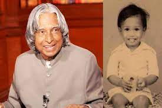

A . P . J Abdul Kalam
1931 - 2015
APJ Abdul Kalam’s Childhood and Early Life
Abdul Kalam had to struggle a lot to reach the success he has achieved in his career. He has been a live manifestation of the strength he describes in this quote. Avul Pakir Jainulabdeen Abdul Kalam or A.P.J Abdul Kalam was born on 15 October, 1931 to a humble Tamil Muslim family. He had to sell newspapers his his childhood in order to manage the finances of the family. He was an average student in school but his keen interest in studies and his hard work are what helped him achieve success in his career.
Kalam graduated in Physics from Tiruchirapalli’s St Joseph’s College, which was affiliated with the University of Madras, in 1954. In the year 1955, Kalam pursued Aerospace Engineering from Madras Institute of Technology. Kalam wanted to become a fighter pilot for IAF but missed the opportunity as there were only eight positions and Kalam qualified ninth.
Some memorable thoughts of Dr. APJ Abdul Kalam will always become motivational for all..
- “If you want to shine like a sun. First burn like a sun.”
- “All of us do not have equal talent. But, all of us have an equal opportunity to develop our talents.”
- “Thinking should become your capital asset, no matter whatever ups and downs you come across in your life.”
- “Man needs difficulties in life because they are necessary to enjoy the success.”